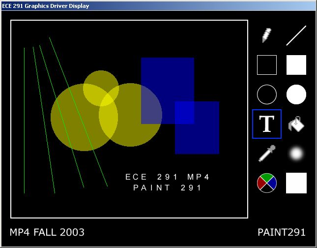

<%
title = "ECE 291 - MP4"
subtitle = "MP4"
%>
Machine Problem 4: Paint 291
| Assigned |
Tuesday, October 21 |
| Due Date |
Wednesday, November 5
|
| Purpose |
Protected Mode, High Resolution Graphics, Mouse |
| Points |
80 |
Introduction
In this MP, you will be developing a paint program using
high resolution graphics in protected mode. The paint program will not be
as good as Adobe Photoshop for example, but it's no Windows Paint either.

Problem Description
You will be implementing Paint 291 by doing the following:
Functions
This assignment has 18 functions. You will receive credit by
replacing each of the functions with your own code. All the functions are C-style functions (parameters on stack, return value in
eax/ax/al, all general purpose registers other than esi and edi may be
clobbered). A function that does not take any parameters will be denoted as void
within the parentheses. A parameter name prefixed with an asterisk (*) means it is a
pointer, otherwise the parameter is an actual value. The size of the parameters will be denoted as
word or dword. A function that does not return a value will be declared as void,
otherwise the size of return value will be specified using the previously
mentioned scheme.
dword _PointInBox(word PointX, word PointY, word
BoxULCornerX, word BoxULCornerY, word BoxLRCornerX, word BoxLRCornerY)
- Determines if the point (X,Y) is located in the box formed by the points (BoxULCornerX,BoxULCornerY)
and (BoxLRCornerX,BoxLRCornerY)
- Inputs:
- X - x coordinate of point in question
- Y - y coordinate of point in question
- BoxULCornerX - x coordinate of upper-left hand corner of box
- BoxULCornerY - y coordinate of upper-left hand corner of box
- BoxLRCornerX - x coordinate of lower-right hand corner of box
- BoxLRCornerY - y coordinate of lower-right hand corner of box
- Outputs:
- Calls: None
- Returns: 1 if BoxULCornerX <= X <= BoxLRCornerX and BoxULCornerY
<= Y <= BoxLRCornerY, 0 otherwise
- Points: 2
dword _GetPixel(dword *DestOff, word DestWidth, word DestHeight, word X,
word Y)
- Gets the color of the pixel located at the point (X,Y) in the buffer
pointed to by DestOff
- Inputs:
- DestOff - offset of an image buffer in memory
- DestWidth - width of the buffer
- DestHeight - height of the buffer
- X - x coordinate of point
- Y - y coordinate of point
- Outputs: None
- Calls: _PointInBox
- Returns: color of the pixel located at (X,Y) in the buffer, otherwise 0 if
the point (X,Y) is not within the boundary of the buffer
- Points: 2
void _DrawPixel(dword *DestOff, word DestWidth, word DestHeight, word X,
word Y, dword Color)
- Draws a pixel with color Color at point (X,Y) in the buffer pointed to by
DestOff
- Inputs:
- DestOff - offset of an image buffer in memory
- DestWidth - width of the buffer
- DestHeight - height of the buffer
- X - x coordinate of point
- Y - y coordinate of point
- Color - color of pixel to draw
- Outputs: Pixel drawn to buffer
- Calls: _PointInBox
- Returns: None
- Notes:
- Do not draw the pixel if it is outside the boundaries of the buffer.
- Points: 2
void _DrawLine(dword *DestOff, word DestWidth, word DestHeight, word X1,
word Y1, word X2, word Y2, dword Color)
- Draws a line with color Color from point (X1,Y1) to (X2,Y2) in the buffer
pointed to by DestOff
- Inputs:
- DestOff - offset of an image buffer in memory
- DestWidth - width of the buffer
- DestHeight - height of the buffer
- X1 - x coordinate of start point
- Y1 - y coordinate of start point
- X2 - x coordinate of end point
- Y2 - y coordinate of end point
- Color - color of line to draw
- Outputs: Line drawn to buffer
- Calls: _DrawPixel
- Returns: None
- Notes:
- Follow the algorithm given in the writeup.
- Use the declared line algorithm variables when writing this function.
- Pixels that lie outside the boundaries of the buffer will not be drawn
(_DrawPixel takes care of calling _PointInBox so you should not call it
also).
- Points: 7
void _DrawRect(dword *DestOff, word DestWidth, word DestHeight, word DestX1,
word DestY1, word DestX2, word DestY2, dword Color, dword FillRectFlag)
- Draws a rectangle with color Color from point (X1,Y1) to (X2,Y2) in the
buffer pointed to by DestOff
- Inputs:
- DestOff - offset of an image buffer in memory
- DestWidth - width of the buffer
- DestHeight - height of the buffer
- X1 - x coordinate of start point
- Y1 - y coordinate of start point
- X2 - x coordinate of end point
- Y2 - y coordinate of end point
- Color - color of rectangle to draw
- FillRectFlag - flag to determine whether or not to fill the rectangle
- Outputs: Rectangle drawn to buffer, filled if necessary
- Calls: _DrawLine, _FloodFill
- Returns: None
- Notes:
- Rectangles are made up of 4 lines.
- As with DrawLine, pixels that lie outside the boundaries of the buffer
will not be drawn.
- If the FillRectFlag is set, also fill the rectangle.For the filled rectangle, you do not want to
do an alpha composition within _FloodFill, so pass in a 0 for this parameter.
- Points: 4
void _DrawCircle(dword *DestOff, word DestWidth, word DestHeight, word X,
word Y, word Radius, dword Color, dword FillCircleFlag)
- Draws a circle with center (X,Y), color Color, and radius Radius in the
buffer pointed to by DestOff
- Inputs:
- DestOff - offset of an image buffer in memory
- DestWidth - width of the buffer
- DestHeight - height of the buffer
- X - x coordinate of center
- Y - y coordinate of center
- Color - color of line to draw
- FillCircleFlag - flag to determine whether or not to fill the circle
- Outputs: Circle drawn to buffer, filled if necessary
- Calls: _DrawPixel, _FloodFill
- Returns: None
- Notes:
- Follow the algorithm given in the writeup.
- Use the declared circle algorithm variables when writing this
function.
- As with DrawLine, pixels that lie outside the boundaries of the buffer
will not be drawn.
- If the FillCircleFlag is set, also fill the circle. For the filled circle, you do not want to
do an alpha composition within _FloodFill, so pass in a 0 for this parameter.
- Points: 7
void _DrawText(dword *StringOff, dword *DestOff, word DestWidth, word DestHeight,
word X, word Y, dword Color)
- Draws a text string pointed to by StringOff with color Color at point (X,Y)
in the buffer pointed to by DestOff
- Inputs:
- StringOff - offset of string to draw
- DestOff - offset of an image buffer in memory
- DestWidth - width of the buffer
- DestHeight - height of the buffer
- X - x coordinate of start point
- Y - y coordinate of start point
- Color - color of the string to draw
- [_FontOff] - offset of font image data
- Outputs: String drawn to buffer
- Calls: _PointInBox
- Notes:
- Strings are terminated with a '$'.
- Refer to writeup for description on how to do this function.
- Do not draw pixels that lie outside the boundaries of the buffer.
- Remember to give each pixel its color before drawing it to the buffer.
- Points: 7
void _ClearBuffer(dword *DestOff, word DestWidth, word DestHeight, dword Color)
- Clears a buffer pointed to by DestOff by filling it with color Color
- Inputs:
- DestOff - offset of an image buffer in memory
- DestWidth - width of the buffer
- DestHeight - height of the buffer
- Color - color to make buffer
- Outputs: Color copied to buffer
- Calls: None
- Notes:
- Use string instructions for fast performance.
- Points: 3
void _CopyBuffer(dword *SrcOff, word SrcWidth, word SrcHeight, dword *DestOff,
word DestWidth, word DestHeight, word X, word Y)
- Copies a source buffer pointed to by SrcOff to a location (X,Y) in a
destination buffer pointed to by DestOff
- Inputs:
- SrcOff - offset of source buffer
- SrcWidth - width of source buffer
- SrcHeight - height of source buffer
- DestOff - offset of destination buffer
- DestWidth - width of destination buffer
- DestHeight - height of destination buffer
- X - x coordinate of start point in destination buffer
- Y - y coordinate of start point in destination buffer
- Outputs: Source buffer copied onto destination buffer
- Calls: None
- Notes:
- Use string instructions for fast performance.
- You may assume that SrcWidth + X <= DestWidth and SrcHeight + Y <=
DestHeight
- Points: 5
void _ComposeBuffers(dword *SrcOff, word SrcWidth, word SrcHeight, dword *DestOff,
word DestWidth, word DestHeight, word X, word Y)
- Alpha composes a source buffer pointed to by SrcOff onto a destination
buffer pointed to by DestOff at location (X,Y)
- Inputs:
- SrcOff - offset of source buffer
- SrcWidth - width of source buffer
- SrcHeight - height of source buffer
- DestOff - offset of destination buffer
- DestWidth - width of destination buffer
- DestHeight - height of destination buffer
- X - x coordinate of start point in destination buffer
- Y - y coordinate of start point in destination buffer
- Outputs: Source buffer alpha composed onto destination buffer
- Calls: None
- Notes:
- Refer to writeup for alpha blending algorithm.
- You must use MMX instructions in this function.
- You may assume that SrcWidth + X <= DestWidth and SrcHeight + Y <=
DestHeight
- Points: 7
void _BlurBuffer(dword *SrcOff, dword *DestOff, word DestWidth, word DestHeight)
- Blurs the buffer pointed to by SrcOff and writes the blurred buffer to the
buffer pointed to by DestOff
- Inputs:
- SrcOff - offset of source buffer
- DestOff - offset of destination buffer
- DestWidth - width of destination buffer
- DestHeight - height of destination buffer
- Outputs: String drawn to buffer
- Calls: _PointInBox
- Notes:
- Refer to the writeup for the blur function.
- Do not include points that are outside the boundaries of the buffer
- You may assume that the source and destination buffers are exactly the
same size.
- Points: 7
void _FloodFill(dword *DestOff, word DestWidth, word DestHeight, word X, word
Y, dword Color, dword ComposeFlag)
- Performs a flood fill operation on a region in the buffer pointed to by
DestOff
- Inputs:
- DestOff - offset of an image buffer in memory
- DestWidth - width of the buffer
- DestHeight - height of the buffer
- X - x coordinate of point in the region
- Y - y coordinate of point in the region
- Color - new color for region
- ComposeFlag - flag to determine whether or not to alpha compose the
current color of the region with Color
- Outputs: Region filled with color Color in buffer
- Calls: _PointInBox, _GetPixel, _DrawPixel
- Notes:
- Refer to the writeup for the flood fill algorithm.
- Do not update pixels that lie outside the boundaries of the buffer
- If ComposeFlag is set, update the value of the new color by alpha
composing onto the current color. You can (and should) use the
same code from your _ComposeBuffers function, as it does the same thing.
- Points: 7
dword _InstallKeyboard(void)
- Installs the keyboard ISR
- Inputs: None
- Outputs: None
- Calls: _LockArea
- Returns: 1 on error, 0 otherwise
- Notes:
- You may use a library function to install
this interrupt for you
- Use LockArea to lock the variables the interrupt will access
- To get the length of the handler, subtract the start of the handler
from the label at the end of the handler (remember, labels are just
addresses)
- Points: 1
void _RemoveKeyboard(void)
- Uninstalls the keyboard ISR
- Inputs: None
- Outputs: None
- Notes:
- You may use a library function to remove
this interrupt for you
- Points: 1
void _KeyboardISR(void)
- Handles keyboard input from the user
- Inputs: Keypress waiting at port [_kbPort], [_kbIRQ]
- Outputs: [_key], [_MPFlags]
- Calls: None
- Notes:
- ESC key will end the program
- Store the ASCII representation of the received scancode in the [_key]
variable
- Update the respective _MPFlags when the shift keys are
pressed/released
- Update the flag in _MPFlags when a key other than a shift key is
pressed
- Do not chain the original handler
- You need to save/restore the temporary registers you use as this is an
ISR
- Remember to send an end-of-interrupt signal (write 20h to port 20h) at
the end of the ISR. If [_kbIRQ] >= 8, you also need to ACK with
the slave PIC (write 20h to port A0h)
- Points: 3
dword _InstallMouse(void)
- Installs the mouse callback
- Inputs: None
- Outputs: [_MouseSeg], [_MouseOff]
- Returns: 1 on error, 0 otherwise
- Calls: _LockArea, _Get_RMCB, DPMI_Int
- Notes:
- You cannot call int 33h directly - you need to simulate a
real mode interrupt by calling DPMI_Int with the appropriate values in
the DPMI registers
- Use _Get_RMCB to get a real mode segment and offset that you pass to int
33h
- Do not try to pass cs and the offset of MouseCallback directly to int
33h: selectors are not the same as segments!
- Use LockArea to lock the variables the callback will access
- To get the length of the handler, subtract the start of the handler
from the label at the end of the handler (remember, labels are just
addresses)
- For reference on int 33h, function 000Ch, visit this
page: http://www.delorie.com/djgpp/doc/rbinter/id/87/59.html
(also look at the linked tables)
- You want the callback to be called on left mouse button press and
release as well as on mouse movement.
- Points: 3
void _RemoveMouse(void)
- Removes the mouse callback
- Inputs: [_MouseSeg], [_MouseOff]
- Outputs: None
- Calls: _Free_RMCB, DPMI_Int
- Notes
- Points: 1
void _MouseCallback(dword *DPMIRegsPtr)
- Handles mouse input from the user
- Inputs:
- DPMIRegsPtr - pointer to DPMI register structure
- [_MouseX], [_MouseY], [_MPFlags]
- Outputs: [_MouseX], [_MouseY], [_MPFlags]
- Calls: None
- Notes:
- Use es to retrieve mouse data, not ds
- Use DPMI_<REGISTERNAME>_off to access DPMI register structure
values (ex. DPMI_EAX_off)
- Fields in button state register (see table 3172 linked from URL in
InstallMouse function) that you will need:
- Bit 0 - left mouse button (high when button is down)
- Update values of [_MouseX] and [_MouseY] when mouse is moved
- You need to save/restore the temporary registers you use as this is a
callback
Procedure
- Copy the given MP4 files from the network drive to your home directory
with the following command:
xcopy /s V:\ece291\mp4 W:\mp4
Alternatively, from home you can download the same files as mp4.zip.
- Unlike previous MPs, MP4 will only run on Windows 2000 or Windows XP
machines.
- Also unlike previous MPs, you will need to run 'ex291' to set up the
graphics display. You can do this in a command prompt window, and you
only need to do this once per DOS session. One issue with 'ex291' is
that it seems to disrupt the 'make' command. To get around this, have
two windows open - one in which you DO NOT run 'ex291' and use to make your
program, and the other you use to run your program.
- As with previous MPs, use a text editor to modify the program. As given,
the program uses LIBMP4 routines to implement all functionality. To receive
full credit for the assignment, you will need to implement each of the
subroutines described above with your own code.
- By modifying a few comments, you can mix and match usage of your own code
and Library routines. You may notice that the LIBMP4 routines contain
extraneous and difficult-to-read code. They are not meant to be easily
unassembled!
Final Steps
1. Demonstrate your MP4.EXE to a TA. You may be asked to recompile and demo
the program.
2. Be prepared to answer questions about any aspect of the operation of your
program. The TAs will not accept an MP if you cannot fully explain your code and
your implementation. Delayed MPs will be subject to late penalties as described
in the course syllabus (7 pts per day up to 5 days).
3. The TA will complete the code submission procedure.
MP4.ASM (program framework)